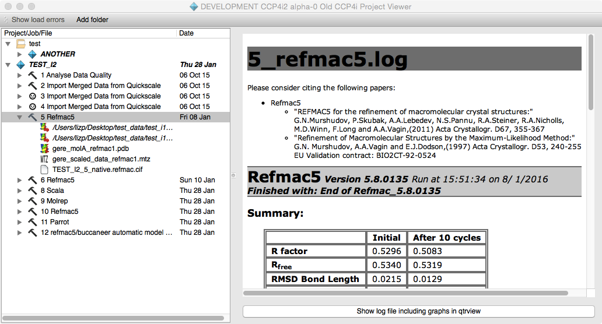
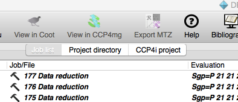

CCP4i2 — Viewing Old CCP4i Projects¶
Contents
Introduction Tidying CCP4i Projects Copying files into CCP4i2 projects Associating projects
Introduction¶
The CCP4i Project Viewer in CCP4i2 will enable you to view and organise old projects and copy data into new CCP4i2 projects but it has no facility for running old CCP4i jobs. The viewer is accessed via View old CCP4i projects on theProjects menu and has the options to access the default projects (in the CCP4i directories.def in .CCP4 sub-directory of your home directory) or you can select a different CCP4i directories.def.

The projects in the database are listed on the left-hand side of the viewer window. If you click on a project then the database.def for that project is read and the jobs and input/output files are displayed. The input files are indicated by a red arrow on the bottom right of the file icon. Clicking on a job will display the log file or clicking on the file will display it either in the right side of the window or a separate viewer. There are additional View options on context menus (right mouse click on the job or file).
Tidying CCP4i Projects¶
If there are problems loading the old projects you can view a summary by clicking the Show load errors tool. If a project directory or file is not found it is highlighted in red in the viewer. The context menu (right mouse click on the project or file) has a Find option that will open a file browser for you to find the right directory or file. If missing projects or files are found the old CCP4i database files are updated.
To organise the projects there is a toolbar option to Add folder that will create folders. You can drag-and-drop the projects into the folders. Folders can be nested. The folder information is stored in a supplementary file your_home_area/.CCP4I2/i1supplement/folders.xml but note that this is only for CCP4i2 and is not understood in CCP4i.
Old CCP4i did not make copies of input data files in the project directory but this interface has the option to Collect input files on the project context menu. This will copy all found input files to an IMPORTED_FILES directory in the project directory and will update the CCP4i database file appropriately.
Copying files into CCP4i2 projects¶
Files listed in the CCP4i project viewer can be drag-n-dropped onto CCP4i2 input file icons. There is also a Copy option on the file context menu and a Paste option on the file input icon menu. If you are moving old-style ‘monster’ MTZ files then you will be asked to select the appropriate columns.
Associating projects¶

It is possible to associate an old CCP4i project with a CCP4i2 project and then the jobs and files for the old project are listed in a tab in the project viewer for the new project. It is easier to view and drag-n-drop from this associated CCP4i project. To associate projects there are two options on the CCP4i project context menu: Make CCP4i2 project will create a new CCP4i2 project or Associate with CCP4i2 project will associate with an existing project.